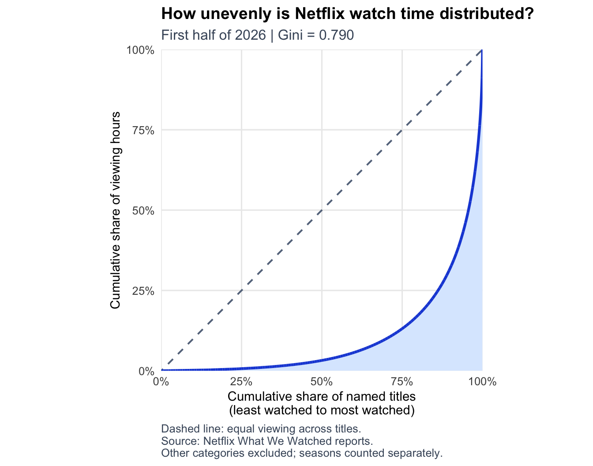

Code
library(tidyverse)
library(rvest)
library(readxl)
library(fs)
library(gt)#' Acquire Netflix What We Watched Reports
#'
#' This function will acquire and standardize all data for MP#01
#' from Netflix. Because Netflix hosts the data files behind a CDN, we
#' are accessing the release pages and automatically extracting links to the
#' relevant files (with CDN hash).
#'
#' After import, files are stacked vertically and some basic cleaning is
#' performed.
load_netflix_data <- function(){
# Note to students: Make sure you have installed the tidyverse and fs packages
# before beginning this assignment. If you aren't sure,
# simply run `library(tidyverse)` at your R Console and, if
# you don't see an error message, `tidyverse` has been
# installed. (Same for `fs`) If you still need to install
# either package, use the `install.packages` function as
# demonstrated in class.
library(tidyverse)
library(rvest)
library(readxl)
library(fs)
data_dir <- path("data", "mp01")
if(!dir_exists(data_dir)){
dir_create(data_dir, showWarnings=FALSE, recurse=TRUE)
}
NETFLIX_URLS <- list(
`2023H1` = "https://about.netflix.com/news/what-we-watched-a-netflix-engagement-report",
`2023H2` = "https://about.netflix.com/news/what-we-watched-the-second-half-of-2023",
`2024H1` = "https://about.netflix.com/news/what-we-watched-the-first-half-of-2024",
`2024H2` = "https://about.netflix.com/news/what-we-watched-the-second-half-of-2024",
`2025H1` = "https://about.netflix.com/news/what-we-watched-the-first-half-of-2025",
`2025H2` = "https://about.netflix.com/news/what-we-watched-the-second-half-of-2025",
`2026H1` = "https://about.netflix.com/news/what-we-watched-the-first-half-of-2026"
)
download_if_needed <- function(url, local){
if(!file_exists(local)){
download.file(url, local, quiet = TRUE, mode = "wb")
}
return(local)
}
NETFLIX_URLS |>
imap_chr(function(release_url, period_name) {
cached <- path(data_dir, paste0(period_name, ".xlsx"))
if (file_exists(cached)) return(NA_character_)
release_url |>
read_html() |>
html_element(xpath = "//a[contains(@href, '.xlsx')]") |>
html_attr("href")
}) |>
enframe("period", "url") |>
mutate(path = path(data_dir, paste0(period, ".xlsx")),
path = map2(url, path, download_if_needed),
data = map(path, function(file) {
map(excel_sheets(file), function(sheet_name) {
read_excel(file, sheet = sheet_name, skip = 3, na = "*") |>
mutate(`Release Date` = as.Date(`Release Date`))
}) |> list_rbind()
}),
data = map(data, \(x) x |> mutate(`Release Date` = as.Date(`Release Date`)))) |>
unnest(data) |>
select(-url, -path) |>
mutate(year=str_sub(period, 1, 4),
half=str_sub(period, start=6),
period_start = make_date(year, if_else(half==1, 1, 7), 1),
period_end = make_date(year, if_else(half==1, 6, 12), if_else(half==1, 30, 31))) |>
filter(!is.na(`Hours Viewed`)) |>
mutate(live_event = !is.na(Runtime) & str_detect(Runtime, "\\d+:\\d+\\*"),
clean_time = str_remove(Runtime, fixed("*")),
Runtime = 60 * hour(hm(clean_time)) + minute(hm(clean_time))) |>
select(-clean_time) |>
mutate(Runtime = coalesce(Runtime, mean(Runtime, na.rm=TRUE)),
.by=Title,
Title = stringi::stri_trans_general(Title, "Latin-ASCII"),
Title = str_remove(Title, " // .*"),
Title = str_remove(Title, "[^[:ascii:]].*"),
Title = str_trim(Title)) |>
filter_out(Title == "") |>
select(year,
period,
period_start,
period_end,
Title,
-half,
Runtime,
Views,
`Hours Viewed`,
`Release Date`,
`Available Globally?`,
live_event)
}
NETFLIX_DATA <- load_netflix_data()
dim(NETFLIX_DATA)[1] 115849 11NETFLIX_CLEAN <- NETFLIX_DATA |>
rename(
title = Title,
runtime = Runtime,
views = Views,
hours_viewed = `Hours Viewed`,
release_date = `Release Date`,
available_globally = `Available Globally?`
) |>
mutate(
year = as.integer(year),
available_globally = available_globally == "Yes",
# Correct the reporting period's end date.
period_end = if_else(
str_ends(period, "H1"),
make_date(year, 6, 30),
make_date(year, 12, 31)
)
)
# Aggregate rows contain many unnamed titles: retain their viewing hours,
# but exclude them from title counts, rankings, and per-entry averages.
AGGREGATE_LABELS <- c("Other Shows", "Other Movies")
NETFLIX_TITLES <- NETFLIX_CLEAN |>
filter(!title %in% AGGREGATE_LABELS)
# Cleaned title names are approximate identifiers; distinct works can share a name.
glimpse(NETFLIX_CLEAN)Rows: 115,849
Columns: 11
$ year <int> 2023, 2023, 2023, 2023, 2023, 2023, 2023, 2023, 202…
$ period <chr> "2023H1", "2023H1", "2023H1", "2023H1", "2023H1", "…
$ period_start <date> 2023-01-01, 2023-01-01, 2023-01-01, 2023-01-01, 20…
$ period_end <date> 2023-06-30, 2023-06-30, 2023-06-30, 2023-06-30, 20…
$ title <chr> "The Night Agent: Season 1", "Ginny & Georgia: Seas…
$ runtime <dbl> 491, 587, 856, 409, 389, 497, 2703, 533, 548, 428, …
$ views <dbl> NA, NA, NA, NA, NA, NA, NA, NA, NA, NA, NA, NA, NA,…
$ hours_viewed <dbl> 812100000, 665100000, 622800000, 507700000, 5030000…
$ release_date <date> 2023-03-23, 2023-01-05, 2022-12-30, 2022-11-23, 20…
$ available_globally <lgl> TRUE, TRUE, TRUE, TRUE, TRUE, TRUE, FALSE, TRUE, TR…
$ live_event <lgl> FALSE, FALSE, FALSE, FALSE, FALSE, FALSE, FALSE, FA… year period period_start period_end
Min. :2023 Length :115849 Min. :2023-01-01 Min. :2023-06-30
1st Qu.:2023 N.unique : 7 1st Qu.:2023-07-01 1st Qu.:2023-12-31
Median :2024 N.blank : 0 Median :2024-07-01 Median :2024-12-31
Mean :2024 Min.nchar: 6 Mean :2024-06-28 Mean :2024-12-27
3rd Qu.:2025 Max.nchar: 6 3rd Qu.:2025-07-01 3rd Qu.:2025-12-31
Max. :2026 Max. :2026-01-01 Max. :2026-06-30
title runtime views hours_viewed
Length :115849 Min. : 2.0 Min. : 100000 Min. : 100000
N.unique : 31956 1st Qu.: 99.0 1st Qu.: 100000 1st Qu.: 300000
N.blank : 0 Median : 120.0 Median : 300000 Median : 1000000
Min.nchar: 1 Mean : 264.8 Mean : 1471430 Mean : 5701114
Max.nchar: 217 3rd Qu.: 294.0 3rd Qu.: 1200000 3rd Qu.: 4100000
Max. :23853.0 Max. :481600000 Max. :964100000
NAs :4603 NAs :18200
release_date available_globally live_event
Min. :2010-04-01 Mode :logical Mode :logical
1st Qu.:2019-08-01 FALSE:83096 FALSE:115539
Median :2021-08-03 TRUE :32749 TRUE :310
Mean :2021-05-07 NAs :4
3rd Qu.:2023-03-03
Max. :2026-06-29
NAs :78750 The dataset has 115,849 records spread across seven reporting periods, running from January 2023 through June 2026. Each record is usually one title’s performance over a single six month window, so the same title can show up several times.
After cleaning, I checked that the years, dates, viewing hours, and global availability fields were stored in the right formats, and they were.
On average, a record has about 5.7 million viewing hours, but the median is only 1 million. That gap tells us a small number of hugely popular titles are pulling the average up, so the typical title gets far less viewing than the average suggests. Keep in mind these numbers measure hours watched, not how many people watched.
There are some gaps in the data. Run times are missing for 4,603 records, view counts for 18,200, and release dates for 78,750. That last one is the biggest limitation. Without release dates, it’s hard to look at how viewing changes with a title’s age, and the missing run times make it harder to estimate how long the full catalog really is.
# A tibble: 1 × 3
first_date last_date distinct_titles
<date> <date> <int>
1 2023-01-01 2026-06-30 31954# Inspect matching titles before calculating franchise totals.
FRANCHISE_TITLES <- NETFLIX_CLEAN |>
filter(
str_detect(
title,
regex("Bridgerton|Queen Charlotte|Stranger Things|Tales from",
ignore_case = TRUE)
)
) |>
distinct(title) |>
arrange(title)
# print(FRANCHISE_TITLES, n = Inf) # Console-only diagnostic; omitted from report.BRIDGERTON_DATA <- NETFLIX_CLEAN |>
filter(str_detect(title, fixed("Bridgerton")))
# Keep a separate total for the story series, excluding companion content.
BRIDGERTON_SERIES <- BRIDGERTON_DATA |>
filter_out(str_detect(title, fixed("Afterparty"))) |>
filter_out(str_detect(title, fixed("Fireplace")))
STRANGER_THINGS_DATA <- NETFLIX_CLEAN |>
filter(str_detect(title, fixed("Stranger Things"))) |>
filter_out(str_detect(title, fixed("Beyond Stranger Things"))) |>
filter_out(str_detect(title, fixed("Tales From"))) |>
filter_out(str_detect(title, fixed("Fireplace"))) |>
filter_out(str_detect(title, fixed("Behind the Curtain"))) |>
filter_out(str_detect(title, fixed("One Last Adventure")))
# Check that the franchise calculation contains only the five main seasons.
stopifnot(setequal(unique(STRANGER_THINGS_DATA$title),
c("Stranger Things", paste("Stranger Things", 2:5))))
BRIDGERTON_TOTALS <- BRIDGERTON_DATA |>
summarise(
all_related_hours = sum(hours_viewed),
story_series_hours = sum(BRIDGERTON_SERIES$hours_viewed)
)
STRANGER_THINGS_TOTAL <- STRANGER_THINGS_DATA |>
summarise(
seasons_counted = n_distinct(title),
total_hours = sum(hours_viewed)
)
print(BRIDGERTON_TOTALS, width = Inf)# A tibble: 1 × 2
all_related_hours story_series_hours
<dbl> <dbl>
1 4862800000 4860400000# A tibble: 1 × 2
seasons_counted total_hours
<int> <dbl>
1 5 5548500000# Question 5: top 10 titles in the first half of 2026.
NETFLIX_2026H1 <- NETFLIX_CLEAN |>
filter(period == "2026H1")
TOP10_2026H1 <- NETFLIX_2026H1 |>
filter(!title %in% AGGREGATE_LABELS) |>
group_by(title) |>
summarise(
title_hours = sum(hours_viewed),
.groups = "drop"
) |>
arrange(desc(title_hours), title) |>
slice_head(n = 10)
TOP10_SHARE <- TOP10_2026H1 |>
summarise(
top10_hours = sum(title_hours),
total_period_hours = sum(NETFLIX_2026H1$hours_viewed),
share = top10_hours / total_period_hours
)
print(TOP10_2026H1, n = 10)# A tibble: 10 × 2
title title_hours
<chr> <dbl>
1 Bridgerton: Season 4 889800000
2 Stranger Things 5 578400000
3 Teach You a Lesson: Limited Series 514700000
4 His & Hers: Limited Series 454300000
5 ONE PIECE: Season 2 383500000
6 Can This Love Be Translated?: Limited Series 377700000
7 Pursuit of Jade: Season 1 356700000
8 I Will Find You: Limited Series 350500000
9 Run Away: Limited Series 315300000
10 The Night Agent: Season 3 314500000[1] "4.64%"# Question 6: global availability in each reporting period.
# Exclude records with unknown availability.
GLOBAL_SHARES <- NETFLIX_CLEAN |>
filter(!is.na(available_globally)) |>
group_by(period) |>
summarise(
title_share = n_distinct(title[available_globally]) /
n_distinct(title),
hours_share = sum(hours_viewed[available_globally]) /
sum(hours_viewed),
.groups = "drop"
)
GLOBAL_SHARES |>
mutate(
title_share = scales::percent(title_share, accuracy = 0.01),
hours_share = scales::percent(hours_share, accuracy = 0.01)
) |>
print(n = Inf)# A tibble: 7 × 3
period title_share hours_share
<chr> <chr> <chr>
1 2023H1 24.85% 51.54%
2 2023H2 29.94% 52.03%
3 2024H1 26.51% 46.83%
4 2024H2 27.58% 46.22%
5 2025H1 28.68% 49.67%
6 2025H2 30.41% 50.66%
7 2026H1 30.47% 46.98% The dataset covers reporting periods from January 01, 2023 through June 30, 2026.
Excluding the combined “Other Shows” and “Other Movies” categories, the dataset contains 31,954 distinct cleaned title names, with separate seasons counted separately.
Bridgerton related entries accumulated 4,862,800,000 viewing hours across the reporting periods. This broad definition includes Queen Charlotte, the afterparty special, and fireplace content.
The five main Stranger Things seasons accumulated 5,548,500,000 viewing hours, excluding documentaries, companion programs, the animated spinoff, and fireplace content.
The 10 individual titles with the highest viewing hours in the first half of 2026 accounted for 4.64% of that period’s total reported viewing hours. Combined “Other” categories were included in total viewing but excluded from the ranking of individual titles.
In the first half of 2026, globally available titles represented 30.47% of distinct title names and accounted for 46.98% of viewing hours among records with known global availability.
# Table 1: identify each period's leader by hours viewed.
TOP_BY_PERIOD <- NETFLIX_CLEAN |>
group_by(period, title) |>
summarise(
hours_viewed = sum(hours_viewed),
.groups = "drop"
) |>
group_by(period) |>
mutate(
viewing_share = hours_viewed / sum(hours_viewed)
) |>
# Calculate the denominator before removing aggregate rows from candidates.
filter(!title %in% AGGREGATE_LABELS) |>
slice_max(hours_viewed, n = 1, with_ties = TRUE) |>
ungroup() |>
arrange(period)
TOP_TITLES_TABLE <- TOP_BY_PERIOD |>
gt() |>
tab_header(
title = "Most-watched Netflix title in each reporting period"
) |>
cols_label(
period = "Period",
title = "Title",
hours_viewed = "Hours viewed",
viewing_share = "Share of period viewing"
) |>
fmt_number(
columns = hours_viewed,
decimals = 0,
use_seps = TRUE
) |>
fmt_percent(
columns = viewing_share,
decimals = 2
) |>
opt_row_striping()
TOP_TITLES_TABLE| Most-watched Netflix title in each reporting period | |||
| Period | Title | Hours viewed | Share of period viewing |
|---|---|---|---|
| 2023H1 | The Night Agent: Season 1 | 812,100,000 | 0.87% |
| 2023H2 | King the Land: Limited Series | 630,200,000 | 0.70% |
| 2024H1 | Bridgerton: Season 3 | 733,800,000 | 0.78% |
| 2024H2 | Squid Game: Season 2 | 619,900,000 | 0.66% |
| 2025H1 | Squid Game: Season 2 | 840,300,000 | 0.88% |
| 2025H2 | Wednesday: Season 2 | 964,100,000 | 1.00% |
| 2026H1 | Bridgerton: Season 4 | 889,800,000 | 0.91% |
# Table 2: catalog size and known runtime.
# Missing runtime is reported separately, not treated as zero.
CATALOG_SUMMARY <- NETFLIX_TITLES |>
group_by(period) |>
summarise(
titles = n_distinct(title),
known_runtime_hours = sum(runtime, na.rm = TRUE) / 60,
records_missing_runtime = sum(is.na(runtime)),
.groups = "drop"
) |>
arrange(period)
CATALOG_TABLE <- CATALOG_SUMMARY |>
gt() |>
tab_header(
title = "Netflix catalog size by reporting period"
) |>
cols_label(
period = "Period",
titles = "Distinct titles",
known_runtime_hours = "Known runtime (hours)",
records_missing_runtime = "Records missing runtime"
) |>
fmt_number(
columns = c(titles, known_runtime_hours, records_missing_runtime),
decimals = 0,
use_seps = TRUE
) |>
opt_row_striping()
CATALOG_TABLE| Netflix catalog size by reporting period | |||
| Period | Distinct titles | Known runtime (hours) | Records missing runtime |
|---|---|---|---|
| 2023H1 | 18,126 | 58,679 | 3,931 |
| 2023H2 | 15,922 | 66,641 | 110 |
| 2024H1 | 16,078 | 68,241 | 103 |
| 2024H2 | 15,479 | 69,063 | 106 |
| 2025H1 | 16,096 | 73,790 | 107 |
| 2025H2 | 16,396 | 75,229 | 109 |
| 2026H1 | 17,298 | 79,240 | 133 |
# Combine any repeated title entries within a reporting period.
TITLE_PERIOD_HOURS <- NETFLIX_TITLES |>
group_by(title, period) |>
summarise(
hours_viewed = sum(hours_viewed),
.groups = "drop"
)
TOTAL_PERIODS <- n_distinct(NETFLIX_CLEAN$period)
# Only compare titles observed in every reporting period.
CONSISTENCY_SUMMARY <- TITLE_PERIOD_HOURS |>
group_by(title) |>
summarise(
periods_observed = n(),
average_hours = mean(hours_viewed),
minimum_hours = min(hours_viewed),
sd_hours = sd(hours_viewed),
.groups = "drop"
) |>
filter(periods_observed == TOTAL_PERIODS) |>
arrange(desc(minimum_hours), desc(average_hours), title) |>
slice_head(n = 10)
CONSISTENCY_TABLE <- CONSISTENCY_SUMMARY |>
select(-periods_observed) |>
gt() |>
tab_header(
title = "Titles with consistently high viewing",
subtitle = "Present in all seven periods; ranked by minimum period viewing"
) |>
cols_label(
title = "Title",
average_hours = "Average hours per period",
minimum_hours = "Lowest period hours",
sd_hours = "Standard deviation (hours)"
) |>
fmt_number(
columns = c(average_hours, minimum_hours, sd_hours),
decimals = 0,
use_seps = TRUE
) |>
opt_row_striping()
CONSISTENCY_TABLE| Titles with consistently high viewing | |||
| Present in all seven periods; ranked by minimum period viewing | |||
| Title | Average hours per period | Lowest period hours | Standard deviation (hours) |
|---|---|---|---|
| Pablo Escobar, el patron del mal: Season 1 | 136,214,286 | 105,500,000 | 22,860,842 |
| Chiquititas (2013) | 120,014,286 | 105,000,000 | 19,421,588 |
| Stranger Things 4 | 207,385,714 | 97,100,000 | 171,675,823 |
| Suits (2011): Season 1 | 126,885,714 | 80,900,000 | 59,209,724 |
| Breaking Bad: Season 2 | 91,614,286 | 78,500,000 | 11,977,399 |
| Suits (2011): Season 2 | 120,314,286 | 76,100,000 | 61,523,828 |
| Sam & Cat: Season 1 | 91,242,857 | 75,700,000 | 13,755,588 |
| Breaking Bad: Season 5 | 84,114,286 | 74,900,000 | 10,690,249 |
| Money Heist: Part 1 | 80,571,429 | 73,100,000 | 9,627,515 |
| Breaking Bad: Season 3 | 81,971,429 | 70,900,000 | 10,717,076 |
# Table 4: estimate content type.
# Keep live events separate and preserve unknown classifications.
CONTENT_DATA <- NETFLIX_CLEAN |>
mutate(
content_type = case_when(
title == "Other Shows" ~ "TV shows",
title == "Other Movies" ~ "Movies",
live_event ~ "Live events",
str_detect(title, regex("Season", ignore_case = TRUE)) |
runtime > 240 ~ "TV shows",
!is.na(runtime) ~ "Movies",
TRUE ~ "Unclassified"
)
)
CONTENT_SHARES <- CONTENT_DATA |>
group_by(period, content_type) |>
summarise(
hours = sum(hours_viewed),
.groups = "drop"
) |>
group_by(period) |>
mutate(share = hours / sum(hours)) |>
ungroup() |>
select(period, content_type, share) |>
pivot_wider(
names_from = content_type,
values_from = share,
values_fill = 0
) |>
arrange(period)
CONTENT_TABLE <- CONTENT_SHARES |>
gt() |>
tab_header(
title = "Share of viewing hours by estimated content type"
) |>
cols_label(period = "Period") |>
fmt_percent(
columns = -period,
decimals = 2
) |>
tab_source_note(
source_note = paste(
"TV shows: titles containing 'Season' or runtime over 240 minutes.",
"Other titles with known runtime are classified as movies.",
"Live events are separated; remaining titles are unclassified.",
"Aggregate Other Shows/Movies hours are assigned to their named category."
)
) |>
opt_row_striping()
CONTENT_TABLE| Share of viewing hours by estimated content type | ||||
| Period | Movies | TV shows | Unclassified | Live events |
|---|---|---|---|---|
| 2023H1 | 28.95% | 69.17% | 1.88% | 0.00% |
| 2023H2 | 30.35% | 69.17% | 0.48% | 0.00% |
| 2024H1 | 29.67% | 69.54% | 0.79% | 0.00% |
| 2024H2 | 29.43% | 69.77% | 0.55% | 0.25% |
| 2025H1 | 28.04% | 71.10% | 0.54% | 0.32% |
| 2025H2 | 27.88% | 71.13% | 0.75% | 0.23% |
| 2026H1 | 25.92% | 72.97% | 0.76% | 0.35% |
| TV shows: titles containing 'Season' or runtime over 240 minutes. Other titles with known runtime are classified as movies. Live events are separated; remaining titles are unclassified. Aggregate Other Shows/Movies hours are assigned to their named category. | ||||
# Table 5: compare live and prerecorded content within each period.
# Top tier means at or above the group's 90th percentile of hours viewed.
LIVE_COMPARISON <- NETFLIX_TITLES |>
mutate(
content_group = if_else(
live_event,
"Live",
"Prerecorded"
)
) |>
group_by(period, content_group) |>
mutate(
top_tier = hours_viewed >= quantile(hours_viewed, 0.90)
) |>
summarise(
records = n(),
average_hours = mean(hours_viewed),
top_tier_records = sum(top_tier),
top_tier_average_hours = mean(hours_viewed[top_tier]),
.groups = "drop"
) |>
arrange(period, content_group)
LIVE_TABLE <- LIVE_COMPARISON |>
gt(groupname_col = "period") |>
tab_header(
title = "Live versus prerecorded viewing"
) |>
cols_label(
content_group = "Content",
records = "Entries",
average_hours = "Average hours",
top_tier_records = "Top-tier entries",
top_tier_average_hours = "Top-tier average hours"
) |>
fmt_number(
columns = c(
records,
average_hours,
top_tier_records,
top_tier_average_hours
),
decimals = 0,
use_seps = TRUE
) |>
tab_source_note(
source_note = paste(
"Top tier is defined separately within each period and content group",
"using the 90th percentile of hours viewed; ties are included.",
"Aggregate Other Shows/Movies rows are excluded from entry averages.",
"Hours measure viewing time, not unique viewers."
)
) |>
opt_row_striping()
LIVE_TABLE| Live versus prerecorded viewing | ||||
| Content | Entries | Average hours | Top-tier entries | Top-tier average hours |
|---|---|---|---|---|
| 2023H1 | ||||
| Prerecorded | 18,196 | 5,133,414 | 1,823 | 36,464,948 |
| 2023H2 | ||||
| Prerecorded | 15,981 | 5,631,387 | 1,601 | 38,297,002 |
| 2024H1 | ||||
| Prerecorded | 16,149 | 5,819,747 | 1,617 | 39,912,678 |
| 2024H2 | ||||
| Live | 3 | 78,766,667 | 1 | 235,700,000 |
| Prerecorded | 15,547 | 6,036,258 | 1,556 | 41,089,139 |
| 2025H1 | ||||
| Live | 88 | 3,412,500 | 9 | 10,766,667 |
| Prerecorded | 16,082 | 5,898,918 | 1,613 | 40,294,358 |
| 2025H2 | ||||
| Live | 102 | 2,194,118 | 11 | 6,336,364 |
| Prerecorded | 16,346 | 5,824,795 | 1,637 | 39,262,004 |
| 2026H1 | ||||
| Live | 117 | 2,933,333 | 12 | 10,400,000 |
| Prerecorded | 17,234 | 5,595,770 | 1,737 | 37,844,444 |
| Top tier is defined separately within each period and content group using the 90th percentile of hours viewed; ties are included. Aggregate Other Shows/Movies rows are excluded from entry averages. Hours measure viewing time, not unique viewers. | ||||
My recommendation is to build around a dependable library of episodic shows, be selective about buying worldwide rights, and keep the catalog broad. A restaurant menu is a useful comparison. Signature dishes get people in the door, familiar favorites bring them back, and variety means everyone finds something they like. Streaming works the same way: we need big releases, but we also need a deep selection that gives people a reason to keep watching.
Episodic content should anchor the strategy. TV shows made up 69.17% of viewing hours in the first half of 2023 and 72.97% in the first half of 2026. That steady contribution supports investing in returning series and a few carefully chosen new ones. One caution: a show with more episodes naturally racks up more hours, so these numbers don’t prove audiences prefer TV or that we should make episodes longer. Renewal decisions should also weigh completion rates, subscriber retention, and production costs.
Global availability looks promising. In the first half of 2026, globally available titles were 30.47% of distinct titles but drove 46.98% of viewing hours (among records where availability is known). When we commission or license content that could appeal across markets, we should seriously consider worldwide rights. That said, this is a correlation, not proof that going global causes better results. Titles available everywhere can simply reach more people, and they may also have bigger budgets, more marketing, and more built-in popularity. Global availability also doesn’t tell us whether a title is a Netflix original.
Finally, we should protect the breadth of the catalog. The top 10 titles accounted for 4.64% of reported viewing hours in the first half of 2026, which leaves a lot of viewing spread across everything else. Like the everyday items on a restaurant menu, the lesser-promoted titles add up to a large share of demand.
Before locking in the 2027 budget, we should pair these viewing patterns with cost and retention data. Viewing hours alone can’t tell us which investments will be the most profitable.
I used OpenAI Codex to help assist me with R programming, debugging, data preparation, calculation checks, and some table formatting. This included identifying the omitted movie worksheets, correcting reporting dates, and explaining missing values. I also used it to explore analytical approaches, brainstorm recommendations, and troubleshoot the rendering of calculated values in the report.
# Gini measures inequality: zero means equal viewing across entries.
# Use raw hours to study the distribution of Netflix watch time.
# Longer titles can accumulate more hours; this is not unique audience size.
gini_coefficient <- function(x) {
stopifnot(length(x) > 0, all(is.finite(x)), all(x >= 0))
if (sum(x) == 0) return(NA_real_)
x <- sort(x)
n <- length(x)
2 * sum(seq_len(n) * x) / (n * sum(x)) - (n + 1) / n
}
# Reproduce the assignment's example as a check.
stopifnot(abs(gini_coefficient(c(20, 200, 0, 50, 40)) -
0.5548387097) < 1e-8)
# Exclude combined Other categories: each contains many unnamed titles.
# Use cleaned title names as approximate identifiers, as in earlier tables.
GINI_TITLE_HOURS <- NETFLIX_CLEAN |>
filter(!title %in% c("Other Shows", "Other Movies")) |>
group_by(period, title) |>
summarise(hours_viewed = sum(hours_viewed), .groups = "drop")
GINI_BY_PERIOD <- GINI_TITLE_HOURS |>
group_by(period) |>
summarise(
titles = n(),
gini = gini_coefficient(hours_viewed),
.groups = "drop"
) |>
arrange(period)
GINI_2026H1 <- GINI_BY_PERIOD |>
filter(period == "2026H1")
GINI_BY_PERIOD |>
gt() |>
tab_header(title = "Concentration of viewing hours across named titles") |>
cols_label(period = "Period", titles = "Named titles", gini = "Gini (0–1)") |>
fmt_number(columns = titles, decimals = 0) |>
fmt_number(columns = gini, decimals = 3) |>
tab_source_note(source_note = paste(
"Based on raw viewing hours, with seasons counted separately.",
"Combined Other categories and titles absent from the reports are excluded.",
"Catalog coverage changes, so period differences are descriptive."
)) |>
opt_row_striping()| Concentration of viewing hours across named titles | ||
| Period | Named titles | Gini (0–1) |
|---|---|---|
| 2023H1 | 18,126 | 0.814 |
| 2023H2 | 15,922 | 0.793 |
| 2024H1 | 16,078 | 0.795 |
| 2024H2 | 15,479 | 0.794 |
| 2025H1 | 16,096 | 0.794 |
| 2025H2 | 16,396 | 0.789 |
| 2026H1 | 17,298 | 0.790 |
| Based on raw viewing hours, with seasons counted separately. Combined Other categories and titles absent from the reports are excluded. Catalog coverage changes, so period differences are descriptive. | ||
# Begin at (0, 0), then accumulate titles from least to most watched.
LORENZ_2026H1 <- GINI_TITLE_HOURS |>
filter(period == "2026H1") |>
arrange(hours_viewed, title) |>
mutate(
title_share = row_number() / n(),
hours_share = cumsum(hours_viewed) / sum(hours_viewed)
) |>
select(title_share, hours_share) |>
add_row(title_share = 0, hours_share = 0, .before = 1)
GINI_PLOT <- ggplot(LORENZ_2026H1, aes(title_share, hours_share)) +
geom_area(fill = "#DBEAFE") +
geom_abline(slope = 1, intercept = 0, linetype = "dashed",
colour = "#64748B", linewidth = 0.7) +
geom_line(colour = "#1D4ED8", linewidth = 1.1) +
scale_x_continuous(labels = scales::label_percent(),
breaks = seq(0, 1, 0.25), expand = c(0, 0)) +
scale_y_continuous(labels = scales::label_percent(),
breaks = seq(0, 1, 0.25), expand = c(0, 0)) +
coord_equal() +
labs(
title = "How unevenly is Netflix watch time distributed?",
subtitle = paste0("First half of 2026 | Gini = ",
scales::number(GINI_2026H1$gini, accuracy = 0.001)),
x = "Cumulative share of named titles\n(least watched to most watched)",
y = "Cumulative share of viewing hours",
caption = paste("Dashed line: equal viewing across titles.",
"Source: Netflix What We Watched reports.",
"Other categories excluded; seasons counted separately.",
sep = "\n")
) +
theme_minimal(base_size = 12) +
theme(
panel.grid.minor = element_blank(),
plot.title = element_text(face = "bold", size = 14),
plot.subtitle = element_text(colour = "#475569"),
plot.caption = element_text(hjust = 0, colour = "#475569"),
axis.title = element_text(size = 11)
)
GINI_PLOT
My recommendation is to build around a dependable library of episodic shows, be selective about buying worldwide rights, and keep the catalog broad. A restaurant menu is a useful comparison. Signature dishes get people in the door, familiar favorites bring them back, and variety means everyone finds something they like. Streaming works the same way: we need big releases, but we also need a deep selection that gives people a reason to keep watching. Episodic content should anchor the strategy. TV shows made up 69.17% of viewing hours in the first half of 2023 and 72.97% in the first half of 2026. That steady contribution supports investing in returning series and a few carefully chosen new ones. One caution: a show with more episodes naturally racks up more hours, so these numbers don’t prove audiences prefer TV or that we should make episodes longer. Renewal decisions should also weigh completion rates, subscriber retention, and production costs. Global availability looks promising. In the first half of 2026, globally available titles were 30.47% of distinct titles but drove 46.98% of viewing hours (among records where availability is known). When we commission or license content that could appeal across markets, we should seriously consider worldwide rights. That said, this is a correlation, not proof that going global causes better results. Titles available everywhere can simply reach more people, and they may also have bigger budgets, more marketing, and more built-in popularity. Global availability also doesn’t tell us whether a title is a Netflix original. Finally, we should protect the breadth of the catalog. The top 10 titles accounted for 4.64% of reported viewing hours in the first half of 2026, which leaves a lot of viewing spread across everything else. Like the everyday items on a restaurant menu, the lesser-promoted titles add up to a large share of demand. Before locking in the 2027 budget, we should pair these viewing patterns with cost and retention data. Viewing hours alone can’t tell us which investments will be the most profitable.
For the Gini analysis, I measured viewing concentration using raw hours viewed rather than views or a per runtime rate. The question I’m asking is how Netflix’s total watch time is spread across its titles, and hours viewed answers that most directly, since it captures how much of the platform’s actual viewing each title accounts for. It’s also reported consistently for every title in every period, which isn’t true of run time or release dates, both of which have large gaps. The results show that viewing is extremely concentrated. In the first half of 2026, the Gini coefficient is 0.790, and the Lorenz curve stays nearly flat along the bottom for most of the catalog before climbing steeply at the far right. In plain terms, the least-watched half of named titles accounts for only a tiny sliver of viewing hours, while a small group of top titles captures most of the rest. Across all seven periods, the Gini was highest in 2023H1 at 0.814, then settled between 0.789 and 0.795 from 2023H2 onward, so concentration has been remarkably stable for the last three years. That said, raw hours come with a real limitation: they depend on how long a title is. A multi season series has far more content to watch than a ninety-minute movie, so it can pile up hours without necessarily being more popular. Part of this concentration therefore reflects differences in content length, not just differences in audience appeal, and I treat it as a description of how watch time is distributed, not a count of how many people watched. Because seasons are counted separately and the number of named titles shifts from period to period (from about 15,500 to 18,100), I read the differences between periods as descriptive trends, not firm conclusions. The small drop after 2023H1 in particular could partly reflect changes in which titles were reported, so I wouldn’t read much into it.